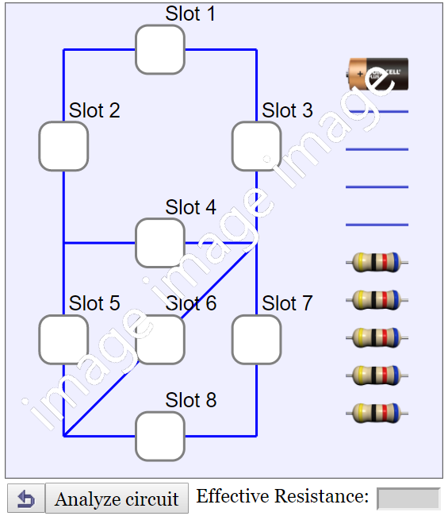
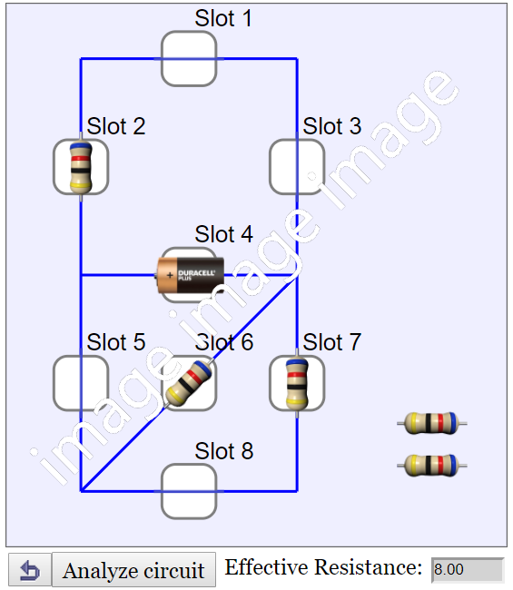

Circuit Play
 
This is a simulation of a simple direct current (D.C.) circuit. By putting wires and resistors at the slots, the effective resistance of the circuit can be analysed and calculated. There are a total of 8 slots to be connected with a choice of 10 components including one battery, four wires and five resistors.
The resistance in the battery and the wires is assumed to be zero ohm.
In order to connect the components correctly, double-tap a component to change its orientation. Each double-tap will rotate the component 45 degree counterclockwise. A component's orentation affects its connection with the rest of the circuit.
The effective resistance of n resistors connected in series can be calculated using the following equation:
Reff = R1 + R2 + R3 + ... + Rn
The effective resistance of n resistors connected in parallel can be calculated using the following equation:
Reff = 1 / (1/R1 + 1/R2 + 1/R3 + ... + 1/Rn)